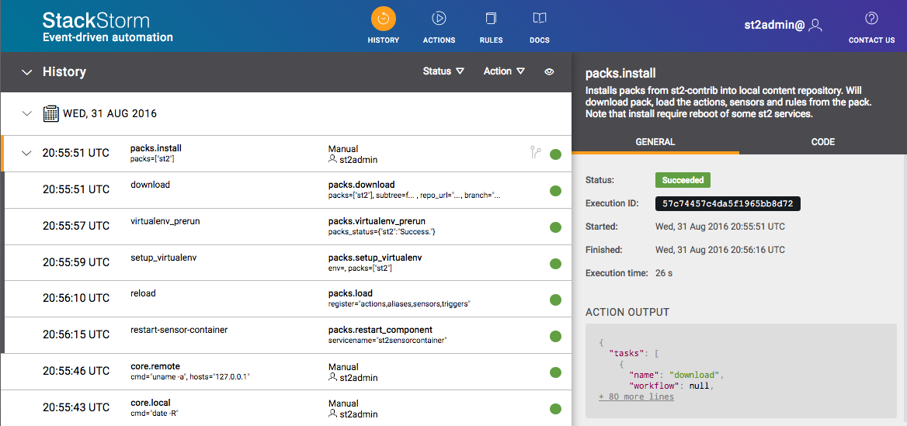
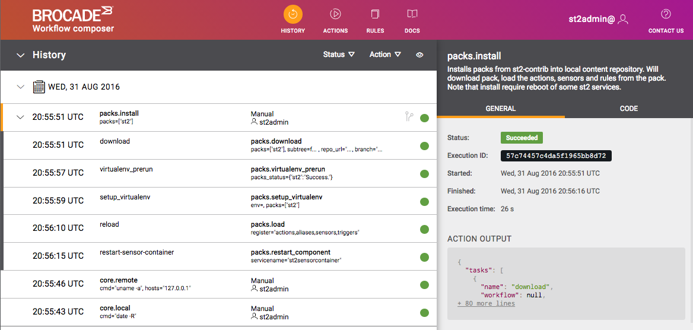
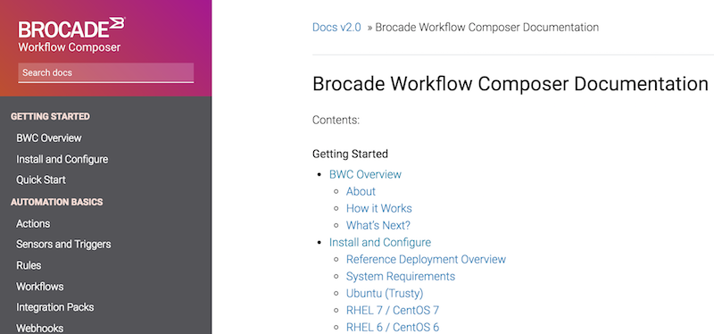

September 1, 2016
by Lindsay Hill
StackStorm Enterprise is back, and it’s now Brocade Workflow Composer. We’ve just shipped version 2.0. The platform has had a look & feel update, the usual round of bugfixes and enhancements, and we’re introducing “Network Automation Suites” for our networking friends. More on those in a minute.

Did you miss me?
We know that you’ve been asking about the future of StackStorm, where the project is going, when you can buy StackStorm Enterprise again, etc. Well, today we should be able to answer all of those questions.
Our community members will have noticed we’ve been a bit quiet recently. That’s because we’ve been working super-hard on getting this release out the door. There’s a lot of work going on under the hood to make it possible, so we’re pretty happy to see it shipped.
StackStorm Enterprise is now Brocade Workflow Composer (BWC). What was known as StackStorm Community Edition is now just StackStorm. That will remain Open Source. The key differences are that BWC includes FlowWorkflow Designer, Professional Support, and now Network Automation Suites.
We’ve updated the colors for StackStorm, and we’ve “Brocade-ised” the colors for the BWC web interface. Here’s a sample of the new look – what do you think?
StackStorm Web Interface
 BWC Web Interface
“Flow” has a new name, and a new look – it’s now “Workflow Designer”:
 Workflow Designer
Workflow Designer
The BWC docs have a different home to the StackStorm docs. The StackStorm documentation remains at docs.stackstorm.com. The BWC docs include BWC-specific information, including details about the Network Automation Suites. They’re at bwc-docs.brocade.com, and yes, they too have a new look and feel:

BWC is an add-on set of packages on top of StackStorm. To install it, you’ll need a license key. You can quickly get an evaluation key at stackstorm.com/#ewc, or if you prefer, at Brocade BWC page. Then you just need to follow the BWC installation instructions. BWC is available for purchase through Brocade and its partners. Thanks to those of you who have put up with us rolling over trial licenses over the last few months.
We’re introducing the concept of “Automation Suites” with this release. These are additional packages installed on top of the BWC platform, that address a specific network automation use-case. The first Automation Suite we’re releasing now is the “IP Fabric Automation Suite.” This targets Brocade IP Fabrics, providing integration packs and additional services needed to provision and manage IP Fabrics. It’s more than just a traditional StackStorm integration pack – it provides things like an inventory service, and additional set of CLI commands.
We think this is a really good concept – by separating the platform from the specific vertical use-case, the platform remains “pure” and can be used by anyone, but we have a way of deploying the integrations and services needed for a specific use-case. You can use BWC without needing to install the networking components.
Expect to see additions to this suite, and new suites, over the coming months. We also think this approach could be used by other people who want to use BWC as an automation platform for other environments. We learnt a lot in making these changes, so get in touch if you want to hear more about it.
We didn’t just change the colors and logos. We’re continuing to make StackStorm better, and we won’t be stopping any time soon. Here’s some of the stuff we’ve done since v1.6:
to_json_string, to_yaml_string and to_human_time_from_seconds
st2 execution cancel commandst2ctl reload now runs –register-rulespacks.load default timeout is now 100spacks.uninstall will now warn you if there any rules referencing the pack being uninstalledThanks to everyone who contributed with bug reports and code.
Full details are, as always, in the Changelog
New packages are now in the stable repositories. If you’re already running StackStorm > v1.4, you can upgrade using yum or apt.
As always, we strongly recommend that you treat your automation code as true code – use source control systems, use configuration management systems. You break it, you get to keep the pieces.
Getting our first “Brocade” release out the door was a major milestone. We had to figure out a few things to get Brocade and StackStorm systems aligned. Now we’ve done that, it’s full steam ahead. More/better/faster releases coming!